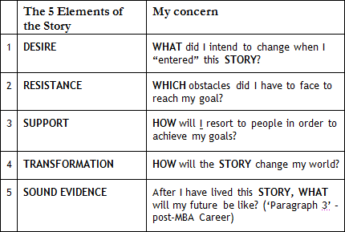

In the past months, you’ve worked hard on the analysis of your STORIES. Now it is harvest time - SYNTHESIS.


I hope so.

Trust me. Now, we’re reaching a critical moment in your application – time to SYNTHESIZE your STORIES.
Our Big Synthesis Framework to build the 3 Stories is simple.
Great. What would this framework be like?
Simple, you need to write the 4 paragraphs below:
Paragraph 1:
Only in the XXX industry (“write here your post-MBA”) will I be able to explore in depth the potential of my 3 Competences (“list here your three main Competences: Cx, Cy, Cz). During my MBA program, I intend to boost these 3 Competences. The following 3 STORIES reveal that I have been creating my path to my post-MBA career.
Paragraph 2: STORY 1 (Competence x)
Paragraph 3: STORY 2 (Competence y)
Paragraph 4: STORY 3 (Competence z)
3 STORIES?
Yes. Essentially, you will be making a great sale by telling 3 good STORIES to the AdCom.
3 STORIES that sell 3 Competences, huh?
Now you have a more comprehensive perspective of your candidacy. Now you are preparing yourself to add a 6th Element to your 3 STORIES in this Big Synthesis Exercise.
6th Element? What would that be?
The MOTIVATIONAL aspect - I would like you to write about the WHY’s in your 3 STORIES. Remember that earlier, when I assessed your 8 STORIES and 8 Competences, I asked you to identify the DESIRES – the WHAT’s of the Heroes. Let’s recall Element 1 (DESIRE).

Now what?
Now I want you to put into context WHY’s together with the other 5 Elements that you already know how to identify.Now I want you to put into context WHY’s together with the other 5 Elements that you already know how to identify.
Km 16 was primarily about this discussion: “contextualize the WHY’s in your STORIES.”
Exactly. Try to put yourself in the Top Schools AdCom’s shoes. Every year, they read as many as 10,000 candidacies. They are probably grateful to applicants who write essays that help them visualize something. To be able to create compelling IMAGE, you will face double challenge: (1.) communicate COHERENCE among all pieces of evidence raised by your theses in your essays; (2.) bring EMOTIONAL RESONANCE to your stories.
We’ve already discussed this on Personal Values.
No one likes to read “correct” essays that lack emotional resonance.
Ok.
So that’s it. Tell me 3 STORIES that show that you are building a career while aiming at a future in which you can use your best Competences.
“Your Best Future Now”? I get it. But tell me something: soon we will adapt those 3 STORIES to specific essays per school, right?
Exactly. Those are the 3 Questions that every school, in essence, will ask you. Of course, each school asks for a specific package, but those are slight variations of those 3 STORIES. (Note: You will begin to work on your research on WHY MBA / WHY SCHOOL, which is a sub-chapter from this exercise, on the next Km and will continue with it through the interview phase).
What is the main difference between writing the 3 STORIES now on Km 18 and writing them on Km 1, at the very beginning of the Marathon?
The only difference is that we will no longer do fragmented, analytical exercises. Now it will make no sense to analyze some element of the application that is not put into the context of the entire application.
OK, it’s again the story of ANALYSIS vs. SYNTHESIS. The difference is that I now have to look at the WHOLE, is that it?
Yeah. Now you must identify a THESIS and, subsequently, support it with three pieces of evidence that defend your point. In this case, 3 STORIES.
Do we start discussing WHY MBA today?
What do you mean?
Your thesis in the first paragraph brings the following sentence: “During my MBA I intend to boost those 3 Competences.”
Oh, that is true. We will not say anything about WHY MBA or WHAT SCHOOL now. We will leave those subjects for Km 26 and Km 27.
From what I understood, then, I must choose my 3 best STORIES and add the WHY’s (MOTIVATIONS) to them. Then I must send them to you.
Yes, I believe that now you are prepared to contextualize this 6th Element to each of your three 3 STORIES.
Wish me luck.
Keep Running, Nicholas.